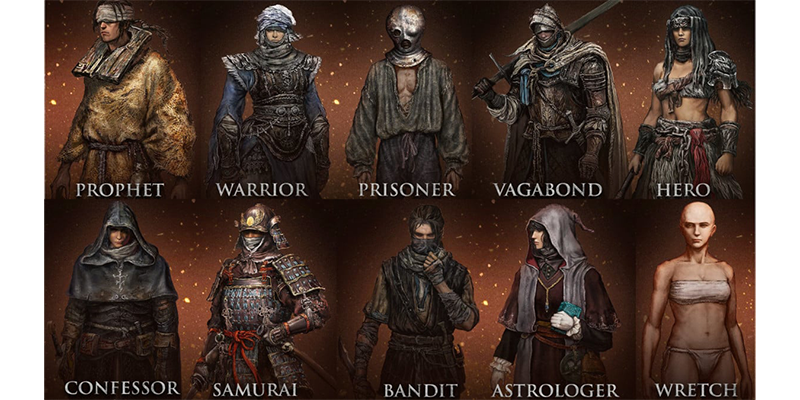

初學者 職業選擇
流浪騎士、密使、勇者、囚犯、武士、預言家、一貧如洗、盜賊、觀星者、劍士

本作戰鬥系統相當多元，繼承了隻狼的刺殺、黑暗靈魂的翻滾、血緣詛咒的槍反，本作可魂系作品歷代戰鬥系統集大成之作。武器類型也是破紀錄的24種，同時新增了許多前作沒有的系統，比如魔法、信仰、戰技、骨灰等，都是玩家能用來擊敗Boss的手段，豐富多元的玩法也讓玩家各自發展出許多流派，玩家可以應因自身狀況選擇一種打法或再開發出其他流派。
流浪騎士、密使、勇者、囚犯、武士、預言家、一貧如洗、盜賊、觀星者、劍士
本作戰鬥系統相當多元，繼承了隻狼的刺殺、黑暗靈魂的翻滾、血緣詛咒的槍反，本作可魂系作品歷代戰鬥系統集大成之作。武器類型也是破紀錄的24種，同時新增了許多前作沒有的系統，比如魔法、信仰、戰技、骨灰等，都是玩家能用來擊敗Boss的手段，豐富多元的玩法也讓玩家各自發展出許多流派，玩家可以應因自身狀況選擇一種打法或再開發出其他流派。
新手入門或前期開荒的不二選擇
優勢：
流浪騎士是所有職業中初始生命值最高的職業，並且其他點數也非常平均幾乎沒有無用的點數，就算玩家想要轉型為法師也不會有任何問題。
初始裝備：
流浪騎士初始裝備攜帶一把長劍和一把戟，並且配備有一個百分百減傷的盾牌，這是所有職業中唯二的初始配備的全減傷盾。
劣勢：
但是由於初始武器的原因玩家只能與敵人近身戰鬥，把握不好翻滾或格擋的時機很有可能會頻繁回到賜福重新來過。
推薦原因：
由於全減傷盾和一身重甲的存在玩家可以通過消耗體力來硬抗絕大部分攻擊，因此流浪騎士是新手入門或前期開荒的不二選擇，也是和線上玩家聯機中必不可少的前排職業。
.
Lv：9 生命15 魔力：10 耐力：11 力量：14 靈巧：13 智力：9 信仰：9 感應：7
初始攻擊的傷害大於其他戰士類職業
優勢：
劍士的初始數據點重點強化了角色的敏捷屬性，因此劍士最適合的道路就是放棄了防禦的敏捷戰士。且持雙刀的攻擊速度、傷害效率都較高
初始裝備：
劍士可以同時使用兩把武器並配備有一把非全減傷盾牌，由於雙刀可以同時進行攻擊，因此初始攻擊的傷害實際上是要大於其他戰士類職業的。
不推薦原因：
雖然使用雙刀的戰士攻擊非常的炫酷，但想要兩把武器全部發揮威力則需要分別對其進行強化，這在前期對於玩家的負擔有些過重了。因此從各方面來說劍士並不推薦作為開荒職業選擇。
.
Lv：8 生命：11 魔力：9 耐力：12 力量：16 靈巧：9 智力：7 信仰：8 感應：11
純力量的戰士
優勢：
從點數來說勇者更加偏向成為一個純力量的戰士，但由於缺乏遠程攻擊手段，在後續的某些怪物面前或許會顯得有些乏力。
初始裝備：
勇者初始攜帶一把戰斧和一面非全減傷的皮盾，雖然盾牌為非全減傷盾，但在其減傷率也算是初始盾牌中的佼佼者了。
推薦原因：
勇者由於戰斧的武器屬性基礎，因此在前期勇者的攻擊比較高。而且遊戲後期的巨劍似乎非常強力，因此想要在遊戲中盡情砍砍砍的玩家可以試試使用勇者開荒。
.
Lv：7 生命：14 魔力：9 耐力：12 力量：16 靈巧：9 智力：7 信仰：8 感應：11
單獨開荒不推薦使用盜賊
優勢：
優勢：
盜賊擁有所有職業中最高的感應點數和比較不俗的靈巧加成。
初始裝備：
盜賊初始自帶短刀、弓箭和減傷率不高的小圓盾。盜賊的優點是可以在初期就進行遠程攻擊，而缺點則是短刀上手難度極高，不太推薦新人使用。
推薦原因：
由於高額的感應加成，使得盜賊玩家擊殺敵人後道具的掉落機率比較高。因此雖然玩家單獨開荒不推薦使用盜賊，但有朋友一起聯機遊玩時也許盜賊是個不錯的選擇。
.
Lv：5 生命：10 魔力：11 耐力：10 力量：9 靈巧：13 智力：9 信仰：8 感應：14
觀星者的基礎屬性如下，該職業擁有全遊最高的初始智力值
優勢：
觀星者的基礎屬性如下，該職業擁有全遊最高的初始智力值。
初始裝備：
觀星者的初始裝備為手杖、短劍和非全減傷的盾牌。
劣勢：
當玩家使用手杖時使用輕攻擊即可直接釋放法術，施放法術需要消耗精力值。
手杖的重攻擊為揮舞手杖敲打敵人，使用手杖近戰十分不便，因此在大部分的戰鬥情況下，占星者仍然需要使用短劍。
不推薦原因：
而短劍由於其上手難度高，再加上觀星者法術職業脆弱的體格很容易頻繁被怪物擊殺，因此在開荒時期並不十分推薦使用觀星者。不過更新之後預言家被削弱，所以很多玩家都推薦改玩觀星者，所以可以參考看看吧。
.
Lv：6 生命：9 魔力：15 耐力：9 力量：8 靈巧：12 智力：16 信仰：7 感應：9
該職業擁有全遊戲中最高的基礎信仰屬性
優勢：
該職業擁有全遊戲中最高的基礎信仰屬性。
初始裝備：
預言家初始攜帶短矛和聖印記，以及一面減傷率只有50%的盾牌。
推薦原因：
由於高額的信仰屬性，預言家可以使用出各種奇蹟作戰。其中包括能夠為自己和友軍恢復生命值的技能，因此如果是多人組隊遊玩，小隊中可以選擇一個預言家，提高小隊續航和提供奇蹟傷害。不過據說更新之後被削弱了，所以很多玩家都改推薦玩觀星者開荒。
.
Lv：7 生命：10 魔力：14 耐力：8 力量：12 靈巧：8 智力：7 信仰：16 感應：11
擁有全職業中最強的遠距離攻擊手段
優勢：
武士的屬性點十分均衡，高額的靈巧也足以應對各種情況。
初始裝備：
但武士自帶的長弓非常優秀，在擁有較高傷害的同時擁有超遠的射擊距離。長按左手武器攻擊鍵，可以對視野縮放從而攻擊遠處的敵人。
劣勢：
武士自帶打刀和長弓，打刀的攻擊速度非常慢且傷害並不出色。
推薦原因：
武士初始的近戰一般，但擁有全職業中最強的遠距離攻擊手段，因此開荒比較推薦用於遊戲初期的開荒。
。
.
Lv：9 生命：12 魔力：11 耐力：13 力量：12 靈巧：15 智力：9 信仰：8 感應：8
新手入門或前期開荒的不二選擇
優勢：
劍士的初始數據點重點強化了角色的敏捷屬性，因此劍士最適合的道路就是放棄了防禦的敏捷戰士。
初始裝備：
劍士可以同時使用兩把武器並配備有一把非全減傷盾牌，由於雙刀可以同時進行攻擊，因此初始攻擊的傷害實際上是要大於其他戰士類職業的。
不推薦原因：
雖然使用雙刀的戰士攻擊非常的炫酷，但想要兩把武器全部發揮威力則需要分別對其進行強化，這在前期對於玩家的負擔有些過重了。因此從各方面來說劍士並不推薦作為開荒職業選擇。
.
Lv：9 生命：11 魔力：12 耐力：11 力量：11 靈巧：14 智力：14 信仰：6 感應：9
十分推薦新手玩家用於開荒
優勢：
密使的基礎屬性如下，該職業是標準的信仰騎士加點，成型後強度很高。
初始裝備：
密使初始攜帶闊劍、全減傷盾和聖印記，這是除了流浪騎士外的第二個擁有全減傷盾的職業。
推薦原因：
密使在使用聖印記時，同樣可以使用出恢復法術。恢復法術和全減傷盾的存在使得前期可以游刃有餘的面對絕大多數情況，因此十分推薦新手玩家用於開荒。
.
Lv：10 生命：10 魔力：13 耐力：10 力量：12 靈巧：12 智力：9 信仰：14 感應：9
高難度開局完完全不建議選擇
優勢：
喜歡挑戰高難度的玩家最時和的選擇
初始裝備：
一頻如洗唯一的優勢，就是擁有高削韌木棒，玩家操作適當，在與敵人對決時可以頻繁觸發處決。
不推薦原因：
等級低數值低，非常不推薦新手使用
.
Lv：1 生命：10 魔力：10 耐力：10 力量：10 靈巧：10 智力：10 信仰：10 感應：10
我的：84550高雄市內門區大學路200號N棟3樓309-3 指導老師：84550高雄市內門區大學路200號J棟105
(000) 000-0000